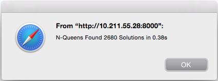

Purpose of Talk
Promote Transcrypt.
This talk is primarily to motivate a new way of web development, including
- serious / commercial / large scale
- supportable
- multi membered
- state of the art projects,
- including newest javascript designs and libs.
While extensions are welcome, Transcrypt is ready for that and deserves far more attention!

I'm NOT the author of Transcrypt, just a convinced user, lacking time to contribute much.
First Showcase
Python version of the first py/js perf found, removing cmd line parsing only:

|
|  |

|